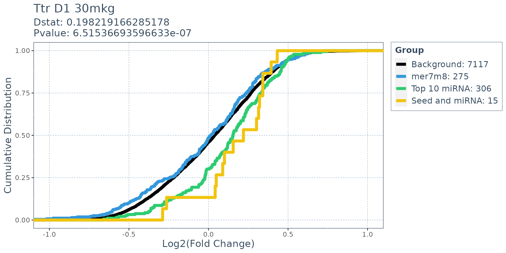

Exploring perturbation of miRNA pathways by siRNA knockdown using SeedMatchR
SeedMatchR_miRNA_analysis.RmdIn this example we will use a few SeedMatchR functions
to examine changes in expression profiles of miRNA target genes. We will
use miRDB as our source of miRNA targets.
Installation
You can install the development version of SeedMatchR from GitHub or the stable build from CRAN.
# Install from GitHub
install.packages("devtools")
devtools::install_github("tacazares/SeedMatchR")Load example data
This example uses the siRNA sequence, D1, targeting the Ttr gene in rat liver from the publication:
Schlegel MK, Janas MM, Jiang Y, Barry JD, Davis W, Agarwal S, Berman D, Brown CR, Castoreno A, LeBlanc S, Liebow A, Mayo T, Milstein S, Nguyen T, Shulga-Morskaya S, Hyde S, Schofield S, Szeto J, Woods LB, Yilmaz VO, Manoharan M, Egli M, Charissé K, Sepp-Lorenzino L, Haslett P, Fitzgerald K, Jadhav V, Maier MA. From bench to bedside: Improving the clinical safety of GalNAc-siRNA conjugates using seed-pairing destabilization. Nucleic Acids Res. 2022 Jul 8;50(12):6656-6670. doi: 10.1093/nar/gkac539. PMID: 35736224; PMCID: PMC9262600.The guide sequence of interest is 23 bp long and oriented 5’ -> 3’.
# siRNA sequence of interest targeting a 23 bp region of the Ttr gene
guide.seq = "UUAUAGAGCAAGAACACUGUUUU"Download data (only need to perform once, can skip to loading if done)
We start by downloading the example data set. This function will download three files from the GEO accession GSE184929. These files represent three samples with different siRNA treatments at two dosages.
get_example_data("mirna")
get_example_data("sirna")Load example data
We can load the example data into the environment.
load_example_data("mirna")
load_example_data("sirna")The DESeq2 results are available through the names
Schlegel_2022_Ttr_D1_30mkg,
Schlegel_2022_Ttr_D4_30mkg and
Schlegel_2022_Ttr_D1_10mkg. The data set name is long, so
it will be renamed to res.
res <- Schlegel_2022_Ttr_D1_10mkg
# Filter DESeq2 results for SeedMatchR
res = filter_deseq(res, fdr.cutoff=1, fc.cutoff=0, rm.na.log2fc = T)Load Annotations
We will next load the annotations for rat. This step is further described in the vignette.
# Load the species specific annotation database object
anno.db <- load_species_anno_db("rat")
# Load the specific features and sequences of interest
features = get_feature_seqs(anno.db$tx.db, anno.db$dna, feature.type = "3UTR")Search features for seed matches
res = SeedMatchR(res, anno.db$gtf, features$seqs, guide.seq, "mer7m8")
head(res)
#> gene_id baseMean log2FoldChange lfcSE stat
#> 1 ENSRNOG00000016275 4091.69884 -8.4473574 NA -30.515742
#> 2 ENSRNOG00000042237 65.09709 -2.0505223 0.1928097 -10.634955
#> 3 ENSRNOG00000000127 473.07585 -0.9871468 0.1079412 -9.145227
#> 4 ENSRNOG00000047179 2033.36328 -0.7260060 0.1044405 -6.951386
#> 5 ENSRNOG00000019525 2064.65901 -0.6957186 0.1087750 -6.395941
#> 6 ENSRNOG00000004821 68.37800 1.1960943 0.1957843 6.109246
#> pvalue padj symbol mer7m8
#> 1 1.611228e-204 1.223406e-200 Ttr 1
#> 2 2.049278e-26 7.780083e-23 Tm6sf2 0
#> 3 5.950483e-20 1.506067e-16 Kpna6 0
#> 4 3.617155e-12 6.866265e-09 Aplp2 1
#> 5 1.595611e-10 2.423095e-07 Hspa9 0
#> 6 1.001031e-09 1.266804e-06 Sntb1 0Preparing miRDB for use with SeedMatchR
The miRDB database is used to identify mRNA that are
predicted to be targets of miRNA. We download the latest version of
miRDB from the website and modify the data to include information for
gene symbol, ENTREZ ID, and ENSEMBL ID. We use the
org.Rn.eg.db data package to access species specific
annotation information for ENSEMBL.
Download miRDB (only needs to be performed once, can skip to loading if done)
get_example_data("mirna")
#> Warning in dir.create(data.path, recursive = TRUE):
#> '/home/runner/.local/share/R/SeedMatchR' already existsLoad miRDB into the environment
load_example_data("mirna")
mirdb.rat = mirdb[mirdb$species == "rno",]
head(mirdb.rat)
#> miRDB.ID target.REFSEQ.ID target.score species miRNA.name
#> 6630977 rno-let-7a-1-3p NM_001105825 56.73140 rno let-7a-1-3p
#> 6630978 rno-let-7a-1-3p NM_001025710 96.90071 rno let-7a-1-3p
#> 6630979 rno-let-7a-1-3p NM_022257 80.13760 rno let-7a-1-3p
#> 6630980 rno-let-7a-1-3p NM_001107001 85.45625 rno let-7a-1-3p
#> 6630981 rno-let-7a-1-3p NM_001037184 93.84484 rno let-7a-1-3p
#> 6630982 rno-let-7a-1-3p NM_001127552 72.10032 rno let-7a-1-3pMap ENSEMBL names
Since the names of the target genes are in REFSEQ format, we will use
the R package org.Rn.eg.db to help map REFSEQ IDs to
ENSEMBL IDs.
library(org.Rn.eg.db)
#> Loading required package: AnnotationDbi
#> Loading required package: Biobase
#> Welcome to Bioconductor
#>
#> Vignettes contain introductory material; view with
#> 'browseVignettes()'. To cite Bioconductor, see
#> 'citation("Biobase")', and for packages 'citation("pkgname")'.
#>
library(dplyr)
#>
#> Attaching package: 'dplyr'
#> The following object is masked from 'package:AnnotationDbi':
#>
#> select
#> The following object is masked from 'package:Biobase':
#>
#> combine
#> The following objects are masked from 'package:GenomicRanges':
#>
#> intersect, setdiff, union
#> The following object is masked from 'package:GenomeInfoDb':
#>
#> intersect
#> The following objects are masked from 'package:IRanges':
#>
#> collapse, desc, intersect, setdiff, slice, union
#> The following objects are masked from 'package:S4Vectors':
#>
#> first, intersect, rename, setdiff, setequal, union
#> The following objects are masked from 'package:BiocGenerics':
#>
#> combine, intersect, setdiff, union
#> The following objects are masked from 'package:stats':
#>
#> filter, lag
#> The following objects are masked from 'package:base':
#>
#> intersect, setdiff, setequal, union
# Create the annotation database based on refseq, ensembl, and gene symbol annotations
mir.targets = AnnotationDbi::select(org.Rn.eg.db,
keys = mirdb.rat[,2],
keytype ="REFSEQ",
columns=c("ENSEMBL", "SYMBOL", "ENTREZID"),
multiVals="list")
#> 'select()' returned many:many mapping between keys and columns
# Find the IDs as as ENSEMBL IDs and return as a list
mir.targ.ens <- mir.targets %>%
group_by(REFSEQ) %>%
summarise(ENSEMBL_ID = toString(unique(ENSEMBL)))
# Match the IDs for ENSEMBL
ref2ens <- mir.targ.ens$ENSEMBL_ID[match(mirdb.rat$target.REFSEQ.ID,
mir.targ.ens$REFSEQ)]
# Bind the new columns
mirdb.rat = cbind(mirdb.rat, ref2ens)Finding miRNA target genes based on miRNA expression data
If you have smallRNAseq expression data, you can use it to decide which miRNA are potentially expressed in your system. If not, you can follow the below approach to identify public small RNAseq experiments and generate a list of top expressed microRNA.
Public rat liver small RNA expression data
Here is an example of looking at miRNA expression data from 6 week old female rat liver in baseline conditions. This data was collected from the GEO accession GSE172269. There are four replicates GSM5251324, GSM5251325, GSM5251326, GSM5251327.
In this case, we work with the normalized counts data. We take the
average across all replicates in the group to find the average miRNA
expression. Then we sort the list by highest expressed miRNA. You can
then choose a cutoff based off of expression, rank, or some combination
of the two. This data is provided as a data object called
GSE172269_F_Lvr_6wks_miRNA.
top_10 = c("rno-miR-192-5p", "rno-miR-22-3p", "rno-miR-148a-3p", "rno-miR-10a-5p", "rno-miR-26a-5p", "rno-miR-21-5p", "rno-miR-143-3p", "rno-miR-27b-3p", "rno-miR-191a-5p", "rno-miR-122-5p")
# subset the database according to the miRNA of interest and the target score
mir.targets.score90 = mirdb.rat$ref2ens[mirdb.rat[,"miRDB.ID"] %in% top_10 & mirdb.rat[,3]>= 90]
# Remove any NA values
mir.targets.score90 = mir.targets.score90[!is.na(mir.targets.score90)]
# unlist the string list of names
mir.targets.score90 = unique(unlist(lapply(mir.targets.score90,
stringr::str_split,
", ")))ECDF for log2(FoldChange) of miRNA targets compared to genes with seed matches
In this analysis we will compare genes with a mer7m8
seed match to those that are targets of miRNA expression in the DESeq2
experiments. We will also have a third group that compares the shared
gene targets of the siRNA and miRNA.
# Set of genes that are specific to mer7m8 seed matches
mer7m8.list = res$gene_id[res$mer7m8 >= 1 & !(res$gene_id %in% mir.targets.score90)]
# Set of genes that are specific to seed and miRNA
seed_and_mir = res$gene_id[res$mer7m8 >= 1 & res$gene_id %in% mir.targets.score90]
# Set of genes that is specific to miRNA only
mir.targets = mir.targets.score90[!mir.targets.score90 %in% seed_and_mir]
# Generate the background list of genes
background.list = res$gene_id[!(res$gene_id %in% mer7m8.list) & !(res$gene_id %in% mir.targets) & !(res$gene_id %in% seed_and_mir)]
ecdf.results = deseq_fc_ecdf(res,
title = "Ttr D1 30mkg",
list("Background" = background.list,
"mer7m8" = mer7m8.list,
"Top 10 miRNA" = mir.targets,
"Seed and miRNA" = seed_and_mir),
stats.test = "KS",
factor.order = c("Background",
"mer7m8",
"Top 10 miRNA",
"Seed and miRNA"),
null.name = "Background",
target.name = "Top 10 miRNA")
#> [1] "Comparing: Background vs. Top 10 miRNA"
#> `stat_bin()` using `bins = 30`. Pick better value with `binwidth`.
ecdf.results$plot
sessionInfo()
#> R version 4.3.1 (2023-06-16)
#> Platform: x86_64-pc-linux-gnu (64-bit)
#> Running under: Ubuntu 22.04.2 LTS
#>
#> Matrix products: default
#> BLAS: /usr/lib/x86_64-linux-gnu/openblas-pthread/libblas.so.3
#> LAPACK: /usr/lib/x86_64-linux-gnu/openblas-pthread/libopenblasp-r0.3.20.so; LAPACK version 3.10.0
#>
#> locale:
#> [1] LC_CTYPE=C.UTF-8 LC_NUMERIC=C LC_TIME=C.UTF-8
#> [4] LC_COLLATE=C.UTF-8 LC_MONETARY=C.UTF-8 LC_MESSAGES=C.UTF-8
#> [7] LC_PAPER=C.UTF-8 LC_NAME=C LC_ADDRESS=C
#> [10] LC_TELEPHONE=C LC_MEASUREMENT=C.UTF-8 LC_IDENTIFICATION=C
#>
#> time zone: UTC
#> tzcode source: system (glibc)
#>
#> attached base packages:
#> [1] stats4 stats graphics grDevices utils datasets methods
#> [8] base
#>
#> other attached packages:
#> [1] dplyr_1.1.2 org.Rn.eg.db_3.17.0 AnnotationDbi_1.62.1
#> [4] Biobase_2.60.0 rtracklayer_1.60.0 GenomicRanges_1.52.0
#> [7] GenomeInfoDb_1.36.0 IRanges_2.34.0 S4Vectors_0.38.1
#> [10] BiocGenerics_0.46.0 SeedMatchR_0.0.0.9000
#>
#> loaded via a namespace (and not attached):
#> [1] DBI_1.1.3 bitops_1.0-7
#> [3] biomaRt_2.56.1 rlang_1.1.1
#> [5] magrittr_2.0.3 matrixStats_1.0.0
#> [7] compiler_4.3.1 RSQLite_2.3.1
#> [9] GenomicFeatures_1.52.0 png_0.1-8
#> [11] systemfonts_1.0.4 vctrs_0.6.2
#> [13] stringr_1.5.0 pkgconfig_2.0.3
#> [15] crayon_1.5.2 fastmap_1.1.1
#> [17] dbplyr_2.3.2 XVector_0.40.0
#> [19] ellipsis_0.3.2 labeling_0.4.2
#> [21] utf8_1.2.3 Rsamtools_2.16.0
#> [23] promises_1.2.0.1 rmarkdown_2.22
#> [25] ragg_1.2.5 purrr_1.0.1
#> [27] bit_4.0.5 xfun_0.39
#> [29] zlibbioc_1.46.0 cachem_1.0.8
#> [31] jsonlite_1.8.5 progress_1.2.2
#> [33] blob_1.2.4 highr_0.10
#> [35] later_1.3.1 DelayedArray_0.26.3
#> [37] BiocParallel_1.34.2 interactiveDisplayBase_1.38.0
#> [39] parallel_4.3.1 prettyunits_1.1.1
#> [41] R6_2.5.1 bslib_0.5.0
#> [43] stringi_1.7.12 testit_0.13
#> [45] jquerylib_0.1.4 Rcpp_1.0.10
#> [47] SummarizedExperiment_1.30.2 knitr_1.43
#> [49] httpuv_1.6.11 Matrix_1.5-4.1
#> [51] tidyselect_1.2.0 yaml_2.3.7
#> [53] codetools_0.2-19 curl_5.0.1
#> [55] lattice_0.21-8 tibble_3.2.1
#> [57] shiny_1.7.4 withr_2.5.0
#> [59] KEGGREST_1.40.0 evaluate_0.21
#> [61] desc_1.4.2 BiocFileCache_2.8.0
#> [63] xml2_1.3.4 Biostrings_2.68.1
#> [65] pillar_1.9.0 BiocManager_1.30.21
#> [67] filelock_1.0.2 MatrixGenerics_1.12.2
#> [69] generics_0.1.3 rprojroot_2.0.3
#> [71] RCurl_1.98-1.12 BiocVersion_3.17.1
#> [73] hms_1.1.3 ggplot2_3.4.2
#> [75] munsell_0.5.0 scales_1.2.1
#> [77] xtable_1.8-4 glue_1.6.2
#> [79] tools_4.3.1 AnnotationHub_3.8.0
#> [81] BiocIO_1.10.0 GenomicAlignments_1.36.0
#> [83] fs_1.6.2 XML_3.99-0.14
#> [85] cowplot_1.1.1 grid_4.3.1
#> [87] colorspace_2.1-0 GenomeInfoDbData_1.2.10
#> [89] restfulr_0.0.15 cli_3.6.1
#> [91] rappdirs_0.3.3 textshaping_0.3.6
#> [93] twosamples_2.0.0 fansi_1.0.4
#> [95] S4Arrays_1.0.4 gtable_0.3.3
#> [97] sass_0.4.6 digest_0.6.31
#> [99] farver_2.1.1 rjson_0.2.21
#> [101] memoise_2.0.1 htmltools_0.5.5
#> [103] pkgdown_2.0.7 lifecycle_1.0.3
#> [105] httr_1.4.6 mime_0.12
#> [107] bit64_4.0.5